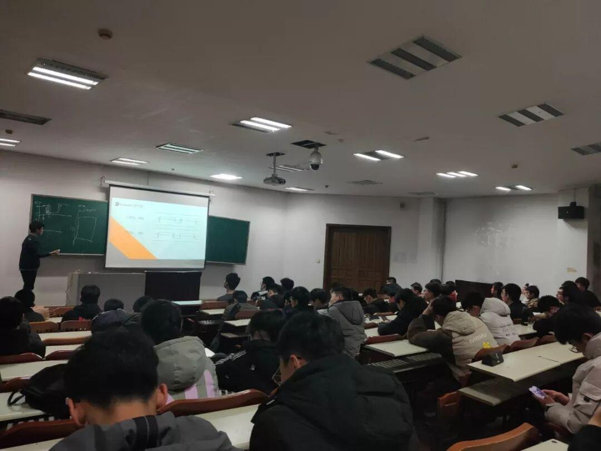
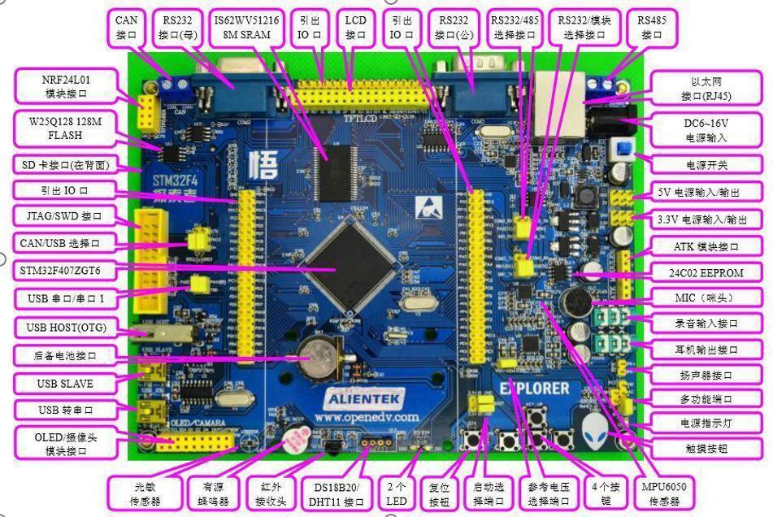
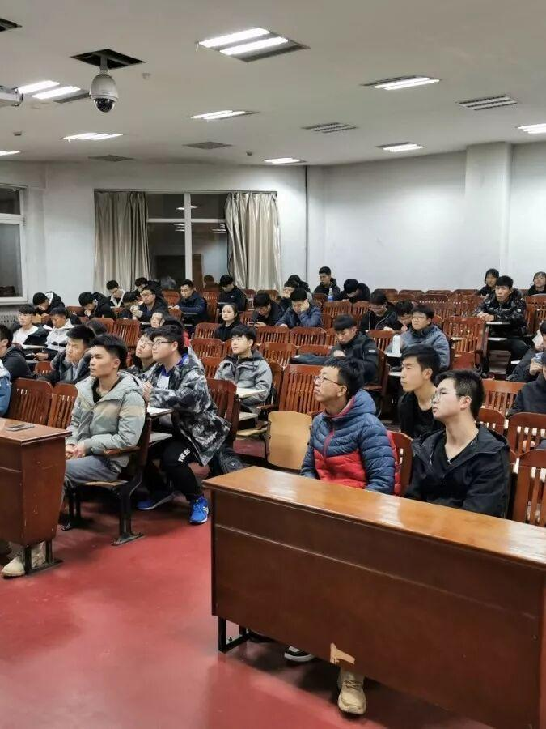

第五次教学|完美的落幕

本周五，我们最后一次教学终于落下帷幕，到了本学期我们挥手告别的时候了，一路上感谢大家的陪伴，同时也为你们一路的坚持感到由衷的敬佩，路在脚下，未来属于一路坚持的你们，加油！

教学开始，我们首先讲解了一下什么是中断以及如何实现中断，大家是否已经了解了这些高高低低的电平代表着什么意思呢？
接着，我们简要介绍了一下什么是单片机，看着这密密麻麻的元件，我和大家一样，一脸懵逼。


小贴士
经过这么多天的学习，相信大家都已经收获满满，忍不住想把自己所学的付诸于实践了吧，随之而来的理工杯大赛就是你们大展身手的时候了，希望你们能借这个平台展现最优秀的自己，期待大家的表现哦！
编辑：王杰